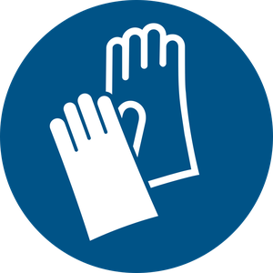
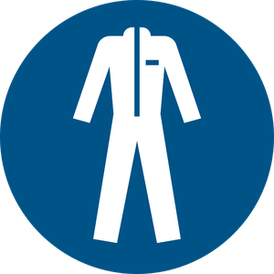
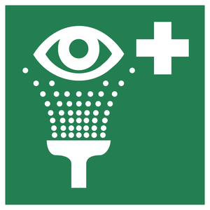
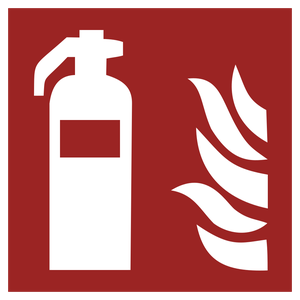

Protective Equipment
See also the Protective Equipment section of the Lab Safety Handbook for the full policy this page summarizes.
Personal Protective Equipment
Eye Protection
Eye protection should be worn whenever the risk of flying debris or chemical spray exists.
Wearing contact lenses is not permitted when working with hazardous chemicals or in machining environments.

GlovesLaboratory gloves are used to protect against exposure to hazardous materials. Common glove materials include natural rubber (latex), as well as synthetic variants of rubber such as nitrile or neoprene.
Rate of reactivity dictates how long a glove is able to maintain its integrity when exposed to a chemical. Breakthrough time — the time required for a particular chemical to cause the glove material to degrade — varies dramatically depending on the glove material. Please note that breakthrough times can also vary between brands or models of gloves, often due to differences in manufacturing techniques or slight material variation.
See CCOHS's Chemical Protective Clothing Index for Glove Materials for a full table of glove material ratings by chemical.
If transferring gloves from their original packaging to a new container, it is good practice to indicate glove-type on the new container. This should help prevent confusion regarding glove resistance.

Lab CoatsLab coats should be worn to prevent contamination of clothing. Do not take lab coats home for laundering. Home laundering creates a risk that other clothes also become contaminated.
Unless heavily contaminated, lab coats can be washed in laboratory sinks.
Hearing Protection
McMaster University's Hearing Safety Program is outlined in RMM 403. Ontario Regulation (O. Reg) 851 restricts unprotected occupational noise exposure to levels below 90 dBA.
Exposure to noise levels of 85 dBA is limited to a maximum of 8 hours daily.
Ear plugs or muffs can be used to reduce noise levels to acceptable values. Note, however, that it is generally not acceptable to wear ear plugs or headphones in the lab for other reasons, as it may prevent communication of danger or hazards.
Laboratory Safety Equipment
See also the Fume Hoods & Lab Equipment section of the Lab Safety Handbook.
Fume Hoods
Fume hoods use a negative pressure differential to draw air, vapours, and contaminants out of a laboratory environment.
Most experiments involving hazardous chemicals should be performed in a fume hood.
Fume hoods are to be inspected annually by University authorities to ensure air flow is adequate. Units are also often equipped with sensors to ensure that air flow is satisfactory. A sash is used to restrict the fume hood opening, maintaining an adequate pressure differential, as well as protecting workers from splashes and vapour.
Chemicals with low flashpoints should be kept in fume hoods or ventilated storage areas to minimize build-up of vapours.

Chemical Showers and Eye-Wash StationsChemical showers and eye-wash stations exist to allow workers to rapidly dilute chemicals in the event of a spill or splash on the body or clothing.
In the event of exposure to chemicals requiring emergency use of a shower, clothing should be removed before showering if there is little risk of further skin exposure. Otherwise, clothing should be removed while showering. The supervisor must be notified immediately of the incident. If necessary, emergency service should be sought by dialing 88 on any university phone (or 905-522-4135 from a cell phone).
Eye-wash stations should be used in the event that chemicals splash into the eye. Dilute the chemicals by washing the eyes for at least 15 minutes, and seek emergency treatment if necessary. The supervisor must, again, be notified immediately to assist and subsequently file an incident report.

Fire ExtinguishersFire extinguishers are located in or immediately outside of every laboratory or office space.
Extinguishers should be used on small fires, however, if the fire becomes out of control, immediately vacate the area of the fire and pull a fire alarm to alert emergency services. Most extinguishers contain only about 5 to 10 seconds worth of propellant.
Fire extinguishers that have been discharged even briefly must be replaced. This is because the powders used in the extinguisher tend to contaminate the release valve's internal seal such that the propellant will slowly discharge, rendering the extinguisher useless. Contact UHS for assistance.
Fire extinguishers are inspected monthly by University authorities and replaced whenever necessary.